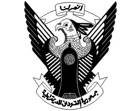
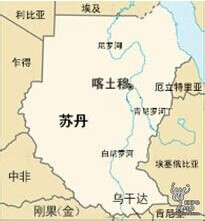

- 苏丹国旗
- 苏丹国徽
- 苏丹标志性建筑
- 苏丹地理位置
苏丹概况
苏丹共和国位于非洲东北部, 红海西岸，面积1,886,068平方公里，为非洲面积第3大国，世界面积第16大国（2011年7月南苏丹独立，分裂以前的苏丹面积约2，505，813平方公里，分裂后的南苏丹面积约619，745平方公里。）
人口概况
人口数量3539万（2013年）。居民大多信奉伊斯兰教，属逊尼派。.全国有19个种族, 597个部落。黑人占52%, 阿拉伯人占39%, 贝贾人占6%, 其它人种占3%。南方地区人口约占总人口的20%。阿拉伯语为官方语言, 使用者占总人口的60%。通用英语。
苏丹经济
苏丹经济结构单一, 以农牧业为主, 工业落后, 基础薄弱, 对自然及外援依赖性强。农业人口占80％。农牧产品出口占出口总值的90-95％。长绒棉产量仅次于埃及居非洲第二位, 阿拉伯树胶产量居世界第一位, 还产玉米、高粱、花生、芝麻、椰枣等。畜牧业也重要, 多羊、牛和骆驼。工业有食糖、油料加工、化工、炼油、纺织、缝纫和制鞋。小规模开采盐、金、铁、铜、白云母等矿藏。出口棉花、阿拉伯树胶、花生、芝麻、活牲畜等农牧产品, 进口原油、油品、原料、食品、纺织品、机械和设备、化工产品等。苏丹港是主要海港, 喀土穆-苏丹港铁路是对外联系的要道。国际货币基金组织把苏列为无力偿债和不宜提供贷款的国家, 于1993年8月停止其会员国的投票权。为加快经济复苏的步伐, 巴希尔政府于1993和1996年分别发布新经济法规, 实施一系列经改措施, 一方面减少政府对经济的干预, 实行市场经济, 鼓励外国投资, 发展农业, 促进出口, 另一方面大力推进私有化进程。
外交关系
奉行独立自主的外交政策, 维护国家主权, 反对西方强权政治, 主张加强阿拉伯国家团结, 密切同非洲国家的合作, 重视同中国等国家发展友好合作关系。近年来, 致力于睦邻友好, 积极改善同美等西方国家关系, 外交更趋灵活、务实。目前, 苏已同世界上近100个国家建立了外交关系。
经贸往来
外贸在苏丹经济中占有重要地位。2004年苏对外贸易总额为78.53亿美元，同比增长44.78%。其中出口37.78亿美元，进口40.75亿美元。出口商品中，石油出口额为31亿美元，占出口总额的82%。其他依次为芝麻（1.78亿美元）、活畜（1.38亿美元）、棉花（9375.2万美元）、黄金（5042万美元）等。中国、沙特、日本、韩国、德国、英国、法国是其主要贸易伙伴。
2004年，苏向中国、日本和沙特的出口分别占出口总额的66.9%、10.7%和4.4%，从中国、沙特、阿联酋、埃及、印度、德国、澳大利亚和日本进口分别占进口总额的13%、11.5%、5.9%、5.1%、4.8%、4.5%、4.1%和4%。